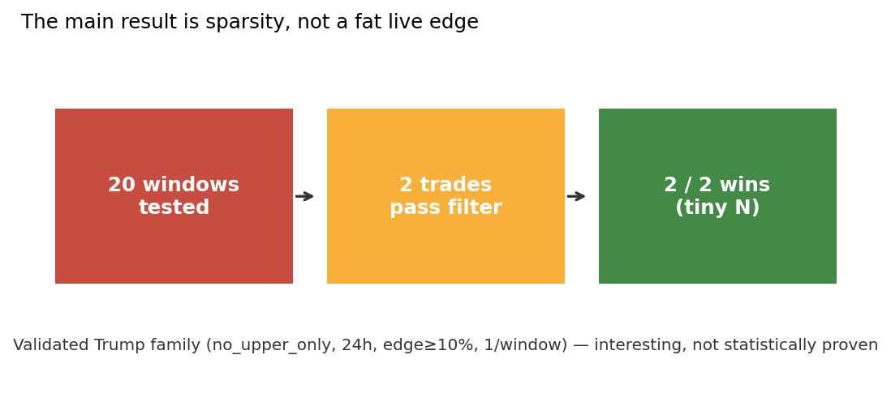
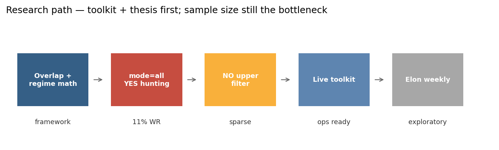
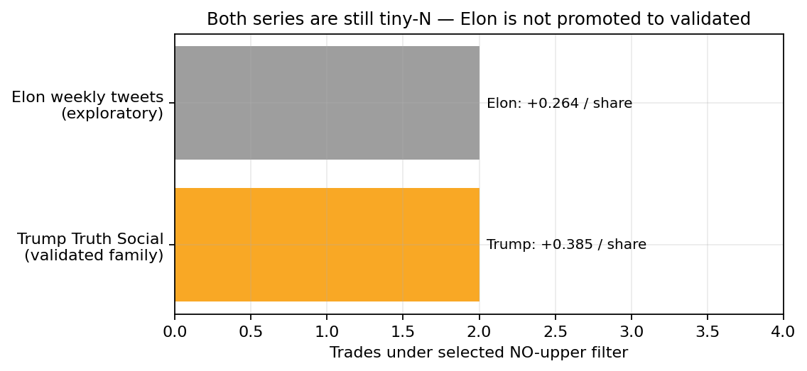
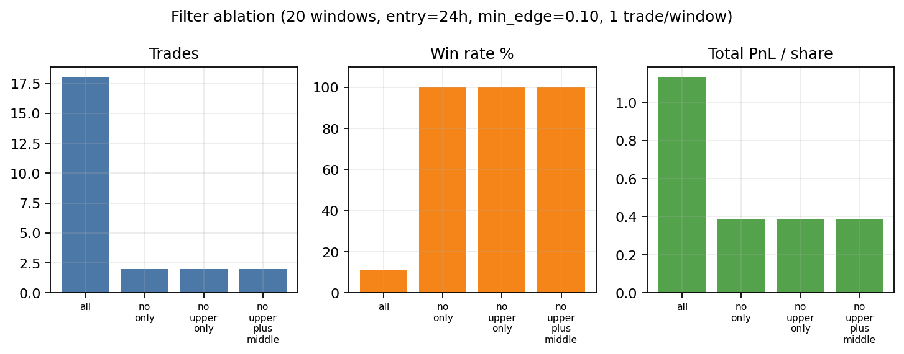
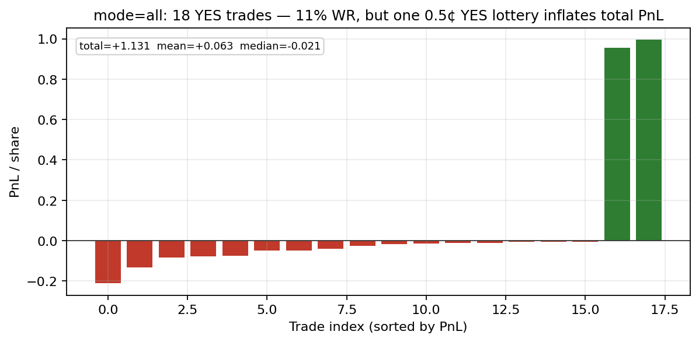
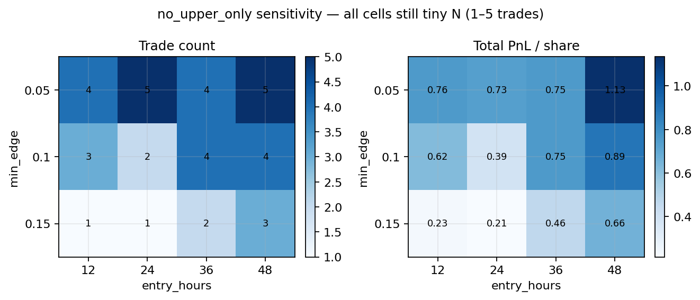

Author: ron1n97
Status: portfolio research write-up — weakest
empirical sample of the Polymarket series
Stack: Python, XTracker counts, Polymarket Gamma + CLOB
history, live signal toolkit
Code: this repository
I built a regime / arithmetic framework for Polymarket overlapping weekly post-count markets (Trump Truth Social; exploratory Elon tweet weeklies). The useful idea is not “forecast the exact total,” but translate each bin into a required posts/day on remaining time and fade upper bins that still need a sustained spike while the market prices them as central.
Honest headline: under the historically preferred
live family (NO on upper bins only, ~24h after open, min
edge 10%, one trade per window) the Trump backtest on
20 closed windows produces only 2
trades — both winners (+0.385 PnL/share total). That is
interesting and operationally clean, not a
statistically proven income strategy. Broad mode=all takes
18 mostly-YES trades with 11% win
rate; total PnL stays positive only because of a lottery
skew (one near-zero YES that paid ~+1).
Elon weekly support is exploratory (7 weekly windows matched; same tiny-N pattern).

Series studied:
donald-trump-of-truth-social-posts-* (Truth
Social via XTracker)elon-tweets windows (exploratory)Windows overlap. Adjacent markets share day blocks, so prices that treat them as independent weekly totals are often wrong. Resolution follows XTracker-style counting (reposts / quotes matter; spikes move prices faster than fair value).
Core translation for bin [L, H]:
need_low = max(L - current_total, 0)req_low = need_low / days_remaining (same for
high)Map required rate to crude regimes: quiet / base / active / spike. Trade when market-implied odds disagree with that regime map.

In this repo, validated means: a trade family that survived historical filters and was wired into the live CLI defaults — not “large-N proven alpha.”
Selected Trump defaults (scripts/live_signal.py):
| Knob | Value |
|---|---|
| Family | no_upper_only (NO on 80-99,
100-119) |
| Entry | first observation ≥ ~24h after window start |
| Min model edge | 0.10 |
| Cap | 1 strongest trade per window |
Backtest (20 closed windows, CLOB history + XTracker):
| Metric | Value |
|---|---|
| Windows tested | 20 |
| Trades | 2 |
| Wins | 2 |
| Win rate | 100% (on n=2) |
| Total PnL / share | +0.385 |
| Avg PnL / trade | +0.193 |
Both trades were NO 100-119 in Sep/Oct 2026 windows.
Treat 100% WR as a red flag for sample size, not a
trophy.

Same 20 windows, entry=24h, min_edge=0.10, max 1 trade/window:
| Mode | Trades | Win rate | Total PnL / share |
|---|---|---|---|
all |
18 | 11.1% | +1.131 |
no_only |
2 | 100% | +0.385 |
no_upper_only (selected) |
2 | 100% | +0.385 |
no_upper_plus_middle |
2 | 100% | +0.385 |

mode=all is almost entirely YES. Win
rate collapses; total PnL is propped up by skew:

One YES entered near 0.5¢ and paid
~+0.995. Median trade in that set is still a small
loss. Do not promote all as the live
family.
Sensitivity on no_upper_only (entry hours × min edge)
never escapes tiny N — cells are 1–5 trades, still
often 100% WR:

Loose edges (min_edge=0.05, entry 24–48h) add a few more
trades and more total PnL, but the story remains sparse
selective NO, not a high-throughput system.
ELON_WEEKLY.md / scripts/elon_* are
intentionally not promoted to the same status as
Trump.
Exploratory no_upper_only run (weekly windows only; 15
requested → 7 matched): 2 trades,
2 wins, +0.264 PnL/share. Same
pathology: filter fires rarely; perfect WR means almost nothing.
Next step before validation: longer sample, confirm a stable trade family, only then share live defaults with Trump.
Even with weak statistics, the repo is a clean research → signal → size → snapshot loop:
live_signal.py / daily_run.py — current
preferred Trump (+ Elon exploratory) printoutposition_size.py — bankroll → simple share planstruth_social_rank.py — full ranking with mode / window
flagstruth_social_snapshot.py — JSONL state for later
analysisbacktest_truth_social_baseline.py (+ sensitivity) —
historical filter testsThat operational clarity is the portfolio asset. The missing asset is sample size.
Is: a curated note on overlapping post-count market
microstructure, a selective NO-upper thesis, honest tiny-N
backtests, and a usable daily toolkit.
Is not: a claim of durable live alpha; a high-frequency weather/BTC-scale evidence pack; or a finished Elon strategy.
Compared with sibling repos:
| Repo | Evidence strength |
|---|---|
| polymarket-btc-5m-research | Strong negative-result economics story |
| polymarket-weather-research | Larger edge backtest + clear regime hierarchy |
| this repo | Strong framework, weak N |
pip install -r requirements.txt
python scripts/make_figures.py
# network required — historical XTracker + CLOB
python scripts/backtest_truth_social_baseline.py \
--windows 20 --entry-hours 24 --min-edge 0.10 \
--max-trades-per-window 1 --mode no_upper_onlyFigures rebuild from results/ without re-hitting the
APIs.